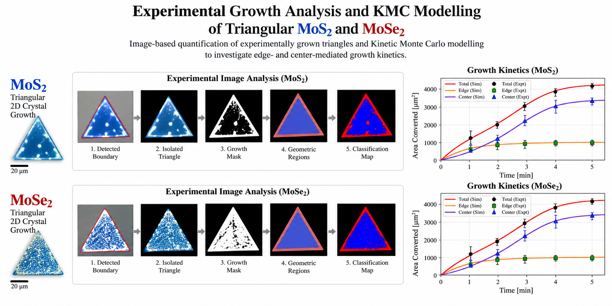
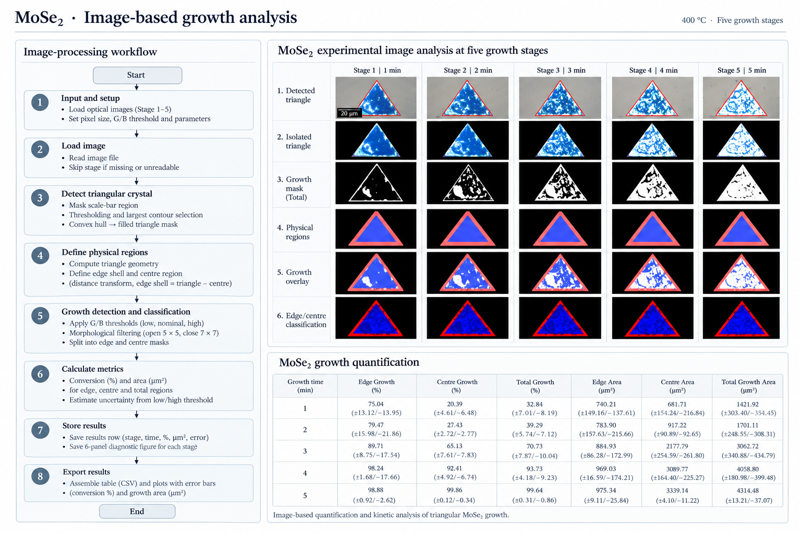
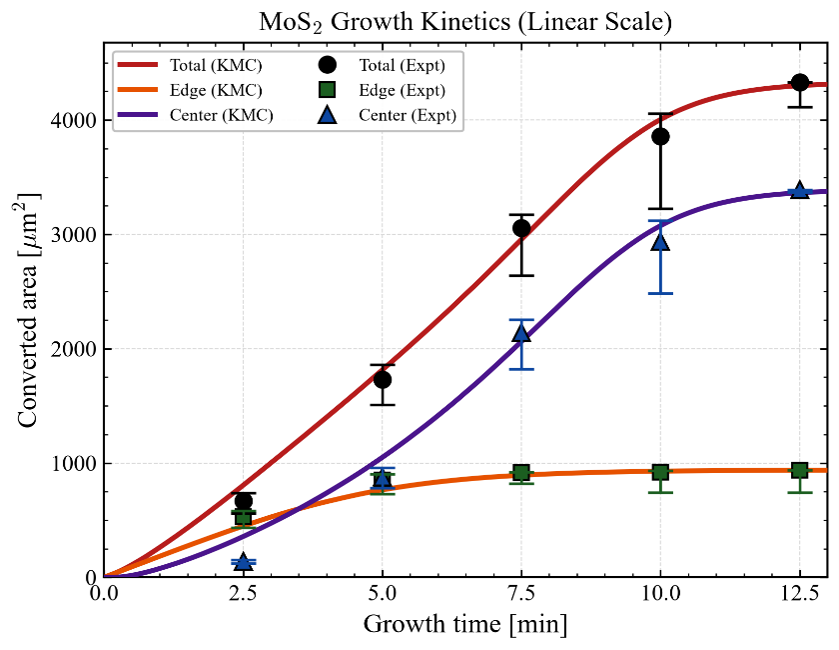
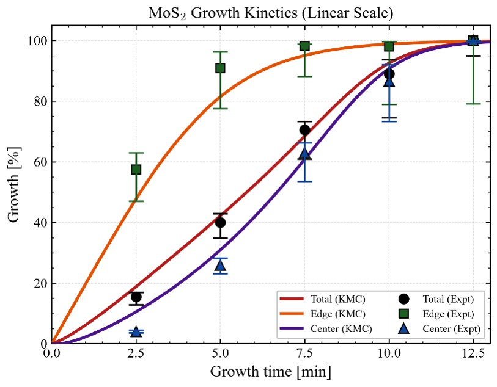
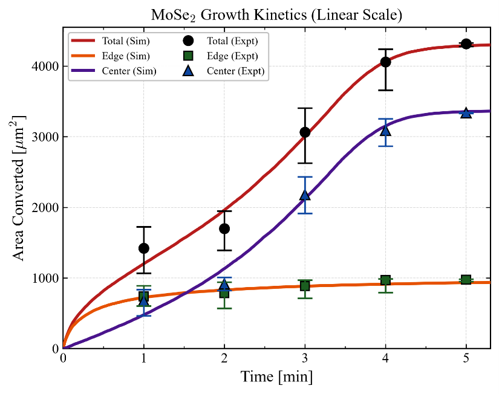
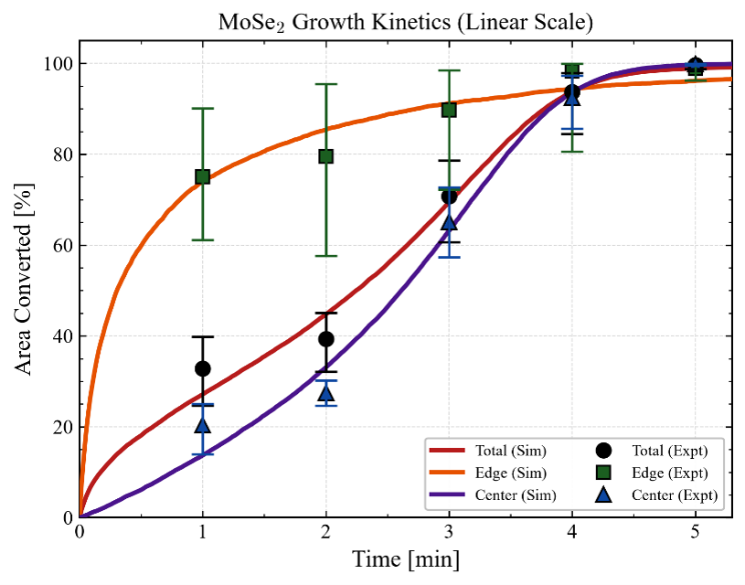

Experimental Growth Analysis and KMC Modelling of Triangular MoS₂ and MoSe₂
Connecting image-based quantification of experimentally grown crystals on triangular substrates with Kinetic Monte Carlo model to investigate edge- and plane-mediated growth kinetics.

Triangular growth and image quantification
Experimental triangular MoS₂ and MoSe₂ crystals were analysed at successive growth stages. Python-based image processing was used to detect each crystal, define edge and centre regions, and quantify growth conversion and physical area.
MoS₂ · Image-based growth analysis
400 °C · Five growth stages

MoSe₂ · Image-based growth analysis
450 °C · Five growth stages

Triangular-lattice KMC model and parameter fitting
The experimental triangle was represented as a triangular lattice with edge and plane regions. A stochastic KMC algorithm was implemented to simulate competing edge and plane growth events. Differential Evolution was used to fit kinetic parameters against experimental conversion data.


Experimental–KMC growth kinetics
Fitted KMC curves are compared with experimental edge, centre and total growth. Percentage conversion and physical growth area are presented with experimental uncertainty shown as error bars.
MoS₂ · Growth kinetics and fitting
400 °C

MoSe₂ · Growth kinetics and fitting
450 °C

My contribution
- 01Developed Python-based image-analysis algorithms for triangular crystal detection, edge/centre segmentation and growth conversion quantification.
- 02Implemented threshold-based uncertainty analysis and generated experimental growth plots with error bars.
- 03Developed the triangular-lattice geometry algorithm and edge-/plane-resolved Kinetic Monte Carlo model.
- 04Implemented Differential Evolution parameter fitting, ensemble simulations, RMSE analysis and experimental–KMC comparisons for MoS₂ and MoSe₂.
References
-
Wang, H., Zhu, D., Jiang, F., Zhao, P., Wang, H., Zhang, Z., Chen, X. and Jin, C., “Revealing the microscopic CVD growth mechanism of MoSe₂ and the role of hydrogen gas during the growth procedure,” Nanotechnology, 29(31), 314001 (2018).
Read paper ↗ -
“Edge Reconstruction-Dependent Growth Kinetics of MoS₂,” ACS Nano (2023). This study examines how MoS₂ edge reconstruction and growth conditions influence island-growth kinetics.
Read paper ↗ -
Gillespie, D. T., “Exact stochastic simulation of coupled chemical reactions,” The Journal of Physical Chemistry, 81(25), 2340–2361 (1977).
Read paper ↗ -
Storn, R. and Price, K., “Differential Evolution – A Simple and Efficient Heuristic for Global Optimization over Continuous Spaces,” Journal of Global Optimization, 11, 341–359 (1997).
Read paper ↗